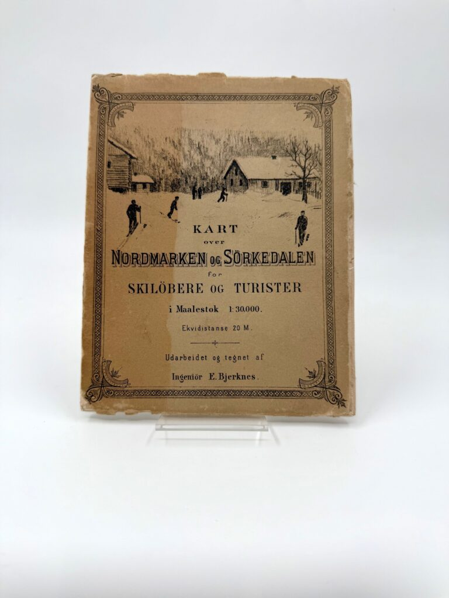

Kart · 1890

Kart over Nordmarken og Sörkedalen for skilöbere og turister
- Kartograf
- Bjerknes, Ernst
- Utgiver
- Ernst Bjerknes
- Utgivelsesår
- 1890
- Målestokk
- 1:30 000
- Ekvidistanse
- 20 meter
- Kartformat
- 52 x 65 cm
- Område
- Nordmarka (syd), Sørkedalen
Om kartografen
Ernst Wilhelm Bjerknes (1865-1955) var ingeniør, kartograf, forfatter, politiker og skiløper. Han arbeidet for Statens vegvesen, Kristiania Opmålingsvæsen og var reguleringssjef i Kristiania. Han hadde egen praksis fra 1908. Bjerknes deltok, og ble nr. 4, i Husebyrennet i
1888 (første 5-mila i Holmenkollen). Han utredet terrenget, skiløypene og hoppbakkene i Nordmarka, og tegnet: Kart over Nordmarken og Sörkedalen for Skilöbere og Turister (1890). Dette regnes som verdens første skikart. Han var bror av Vilhelm Bjerknes.
Les artikkelen
Ernst Bjerknes – ingeniøren som tegnet verdens første skikart
Arne Henrik Frogh · 10. september 2026